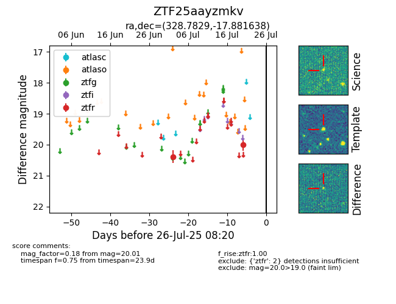

Target ZTF25aayzmkv at 2025-07-26 08:20, see:
FINK: fink-portal.org/ZTF25aayzmkv
Lasair: lasair-ztf.lsst.ac.uk/objects/ZTF25aayzmkv
ALeRCE: alerce.online/object/ZTF25aayzmkv
alt names
ZTF25aayzmkv (ztf,fink)
coordinates:
equatorial (ra, dec) = (328.7829,-17.88164)
galactic (l, b) = (36.2591,-48.46073)
photometry
last ztfr=20.01
2 ztfr detections
